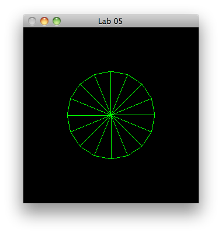
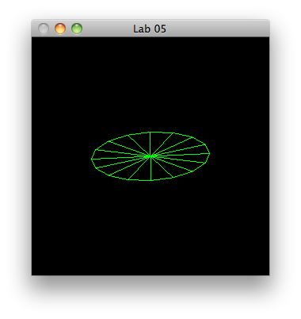
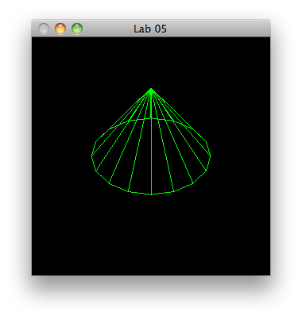
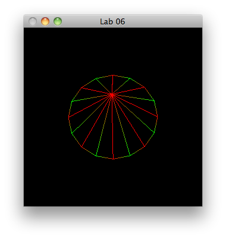
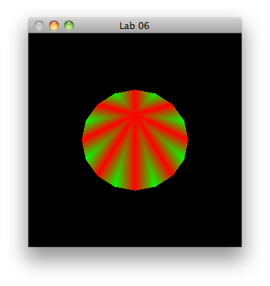
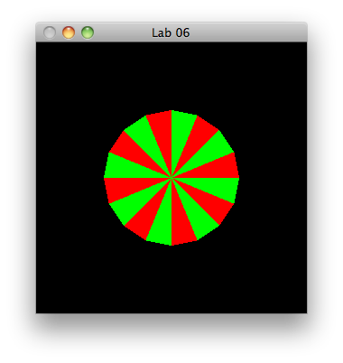

Create a project call lab04a_cones, with a single source file called "cone.cpp"
Incorporate the usual starter code, and have the renderScene display the triangle circle from lab03a:
#define GL_PI 3.1415
void triangleCircle()
{
glBegin(GL_TRIANGLE_FAN);
glVertex3f(0.0f, 0.0f, 0.0f);
float x, y, angle;
for(angle = 0.0f; angle < (2.0f*GL_PI); angle += (GL_PI/8.0f))
{
x = 50.0f*sin(angle);
y = 50.0f*cos(angle);
glVertex2f(x, y);
}
glEnd();
}

void drawCone(float x, float y, float z, float radius)
{
glBegin(GL_TRIANGLE_FAN);
glVertex3f(x, y, z);
float angle;
for(angle = 0.0f; angle < (2.0f*GL_PI); angle += (GL_PI/8.0f))
{
x = radius*sin(angle);
y = radius*cos(angle);
glVertex2f(x, y);
}
glEnd();
}
drawCone(0,0,0, 50);
Have a look at the following glut call:
This enables a function to be registered to intercept and receive non-alphanumeric keystrokes.
Define such a method:
void specialKeys(int key, int x, int y)
{
}
glutSpecialFunc(specialKeys);
and verify in the debugger that it is being called.
We are going to intercept UP,DOWN,LEFT and RIGHT keys, and use their values to adjust the rotation of the code using this API call:
Insert the following code into the specialKeys function:
int xRot=0,yRot=0;
xRot = (key == GLUT_KEY_UP)? -1 : xRot;
xRot = (key == GLUT_KEY_DOWN)? 1 : xRot;
yRot = (key == GLUT_KEY_LEFT)? -1 : yRot;
yRot = (key == GLUT_KEY_RIGHT)? 1 : yRot;
glRotatef(xRot, 1.0f, 0.0f, 0.0f);
glRotatef(yRot, 0.0f, 1.0f, 0.0f);
glutPostRedisplay();

The entity is essentially a disk, as we have displayed all of the vertices on the z axis origin.
Change the call to place the centre of the circle on positive z 75:
drawCone(0,0,75, 50);

We would like to make every second triangle in the cone red or green.
Introduce a flag into the drawCone method:
int step = 0;
glColor3f(step % 2 == 0, step % 2, 0.0f);
step++;

glPolygonMode(GL_FRONT,GL_FILL);
glPolygonMode(GL_BACK,GL_FILL);

The default shade model is GL_SMOOTH, which causes colours to be interpolated at the edges, as documented here:
Switch to GL_FLAT:
glShadeModel(GL_FLAT);

drawCone(0,0,0, 50);
Rotating the cone produces some odd results. It seems that the cone is transparent, as the lines of the triangles seem to flow into one another.
This is because we are seeing "inside" the cone, and its opposing edges are competing for our visual attention.
We can eliminate the confusion by turning on depth testing:
glutInitDisplayMode(GLUT_SINGLE | GLUT_RGB | GLUT_DEPTH);
glEnable(GL_DEPTH_TEST);
See glEnable
Try this, build and test. Its appesrence will still be misleading. We need one additional step, when clearing the screen, we need also to clear the depth bit:
glClear(GL_COLOR_BUFFER_BIT | GL_DEPTH_BUFFER_BIT);
An alternative to depth testing, but usually employed accompanying it, is culling.
Culling distinguishes between "front" and "rear" facing surfaces, and completely removes rear surfaces from view.
To see its effects, remove the Depth testing code just introduced in the last step.
//glEnable(GL_DEPTH_TEST);
Verify that the "confused" cone is on display.
Turn on culling:
glEnable(GL_CULL_FACE);
Build and test.
Surprisingly, nothing will appear - unless you complete a 180 turn of the cone. This is caused by a problem with the 'winding". Opengl needs to know which surfaces are "front" and which are "rear". It relies on winding to do this.
However, our code as two different windings for the circle and cone. We can change this default using
We need to change the front face to counter clockwise for the cone, and clockwise for the base:
glFrontFace(GL_CW);
drawCone(0,0,75, 50);
glFrontFace(GL_CCW);
drawCone(0,0,0, 50);
Set the window size to be larger than the current default.
Divide the screen into 4 quadrants with simple dashed (stippled) lines
Draw a cone in each quadrant
Change the colour scheme for each of the cones. Have some of then using interpolated colours, others using flat.
Also, have some of them using different colours.